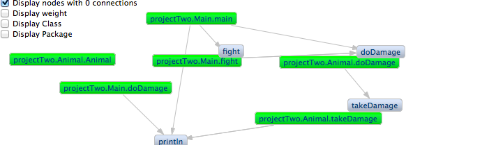
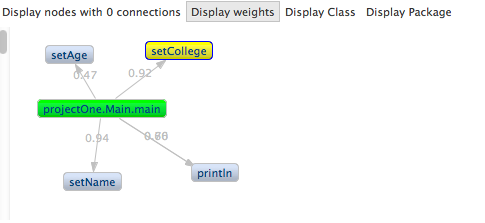
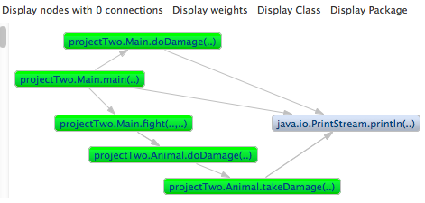
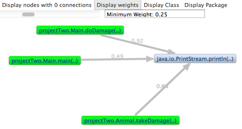
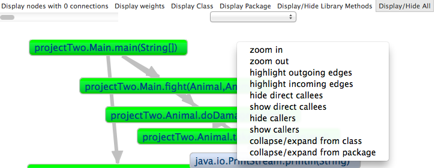
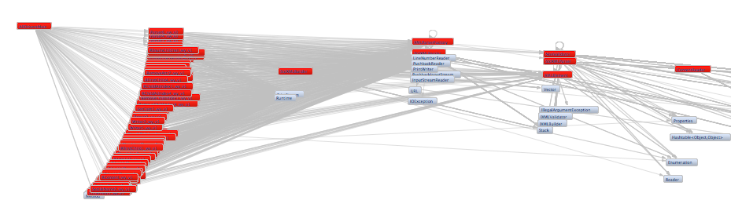
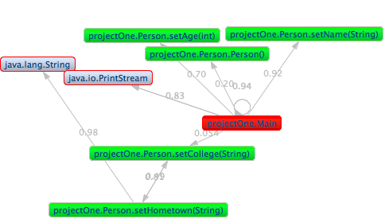
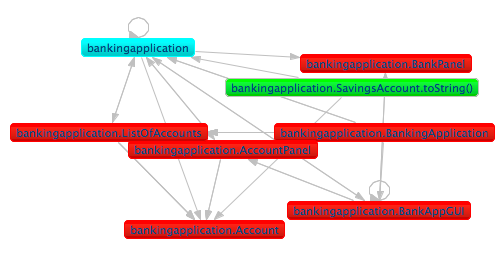
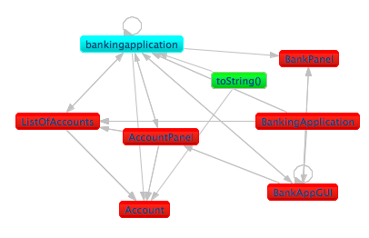
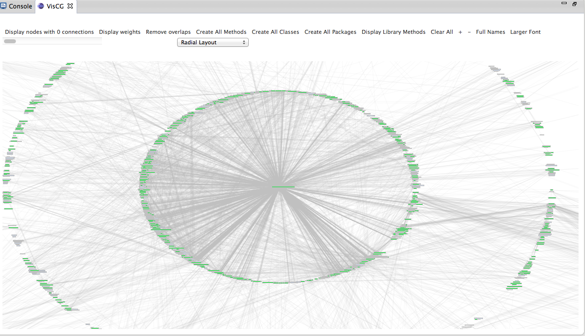

Week 1
Project-wise, this has been a short week. The first couple of days were mostly about settling in, setting up a workspace, and understanding what kind of work I would be doing for the next 10 weeks. I quickly downloaded Java Eclipse, the IDE that VisCG was developed for. All of the java classes I had taken at Vassar used Netbeans as an IDE, so it took a couple of tutorials and new projects for me to get used to Eclipse. I also had to get comfortable with Zest, an Eclipse visualization toolkit. By the second day, I had Eclipse, Zest, and VisCG all up and running on my laptop. VisCG creates another Eclipse workspace where you can see a display of the call graph of a particular project. Yiji showed me how to run VisCG, but I promptly forgot how to use it so I spent the next few hours struggling mightily to test it out. But eventually I got it, so I gave myself a pat on the back for the day.
The next few days I worked on identifying the bugs in VisCG and cleaning up the display. VisCG is supposed to distinguish between user defined methods (green nodes) and library methods (gray nodes). However, I noticed that whenever a user method called another user method, VisCG registered it as a library method. If you look to the left, you can see some of the problems. The gray “fight”, “doDamage”, and “takeDamage” methods are supposed to be the same as the green “projectTwo.Main.fight”, “projectTwo.Animal.doDamage”, and “projectTwo.Animal.takeDamage” methods.
My other task was to get the graph to display correctly with no overlap with the options panel.I initially tried to create another graph object to keep the options in, but through research of the eclipse swt.widgets library I found a more useful tool I could use: the ToolBar. I still had some trouble with the spacing: the toolbar took up too much space while the graph didn't take up enough. I eventually figured out that I needed to set the view (parent)'s layout and adjust the options. This worked perfectly, and the graph/toolbar displayed exactly how I wanted! It's fun when things work. 
Week 2
The call graph displays properly! Or, with minimal errors. I modified the code so each node displays the packageName.className.methodName. The one issue is that the library methods tend to get a bit wordy and hard to read, but for a prototype this should be okay. The priority is on making a correct, functioning call graph, and this configuration does that. I also added an area for each node to display the number of arguments, represented as ".." within parentheses. This keeps the graph compact/not cluttered while distinguishing overloaded methods with the same name. 
The other people on my team have been hard at work, too! Jose, the other undergraduate, has implemented one-way navigation from the nodes to the source code. If the user double-clicks on a user-defined node, the Eclipse editor opens the correct file and highlights the method declaration. Yiji is mostly working on getting the weights of each method correct.
Week 3
I made a right-click menu! If a user right-clicks on a node, a pop-up menu appears. The only option that works right now is "dispose". This action deletes a node on the graph. It also deletes all of the node's edges. If a deleted node's callee has no other callers, that node is deleted too. Otherwise it is left alone. I also implemented curved edges for recursive methods. If a method calls itself, then the edge will be curved (so you can better see the edge).
Week 4
 I also created a small text window to display the minimum weight for the slider. This way users can know which connections are being displayed.
Jose implemented navigation from the source code to the call graph. I finally got it working on my computer. Now the methods can be displayed on-demand. I implemented a hide library methods button on the toolbar. I also implemented a "hide/show caller methods" option on the right-click menu. I'm now working on having the "collapse into package" and "collapse into class" options working. It would be ideal if I can just set it to a graph container, but oh well.
Week 5
I disabled animations for the slider! I changed the code so that instead of disposing nodes, VisCG simply hides nodes. This means no more annoying layout animations or bunching up in the corner! It's compatible with the other toolbar options as well. Yiji gave me some of the code for probCG. I still don't know how it gets the weights of every class, but I know where and how the data is stored. I modified the parser so that it formats the names to be compatible with VisCG (package.class.method()).
My other big assignment today was to add the parameter types to the graph nodes. Instead of representing the parameters as strings of "..", I decided to actually add the type names. It didn't make the graph as cluttered as I feared, so it actually helps the readability of the graph a lot. After I did that I changed the showNodeHandler, to keep the 2-way navigation still working. I also added zoom in/out options on the right-click menu.

Week 6
This week I completely re-configured the class and package collapse/expand options. It's MUCH faster now. Sticking to a model-view-controller structure was the key: changing the values in the model and updating the view is much faster than directly changing the view. I've also figured out how to collapse library methods into their classes or packages. These collapsed nodes are still gray and can be hidden using the "Hide library methods" button. 
Other notable achievements include being able to display constructor invocations (i.e. creations of a class instance) in the graph and adding zoom options in the tool bar. The thickness of each edge now corresponds with how large the corresponding call weight is: the higher the weight, the thicker the edge. This further helps the user figure out which calls are more important than others.
Week 7
This week I debugged the code I changed last week (mainly the class/package options). I also implemented weights for every type of connection: any mixed pair of methods, classes, and packages will have a weight now! These weights were calculated using Frechet inequalities.
The slider and the display weights button work with these updated weights.

Week 8
According to a very informal pilot study, the nodes are hard to read. The package.class.method naming convention is useful but offers too much information for the user. Thus I created options for the nodes to display their simple names (just the method or the class name) or their full name (includes the package name and the class name).


Week 9
The project that we would like to test VisCG on is a text-editing software called JEdit. The problem is, JEdit is so big that testing it on the software has demonstrated some new bugs. When displaying the whole graph, there are around 9000 nodes (methods) and 28,000 connections. This much detail quickly makes the whole graph basically unusable and almost impossible to navigate. I am now working on making the graph display on-demand. This means that if a user chooses an option to create a node, graph will draw the node. The program does not automatically draw all nodes. This configuration is based off of "CallGraph Viewer", an existing call graph plugin for Eclipse.
I've updated the plugin to use Zest 2.0 now. I know that it doesn't sound like a big deal, but the layouts look much nicer. Thanks to Zest 2.0, connections are now displayed above nodes, and the animations can be disabled! I've also started to overhaul some of the older code in VisCG to make the program more efficient. In JEdit, I've deleted around 7,000 unnecessary connections!
Week 10
I'm proud of myself for staying productive on my final week of research. I made the collapse into class/package options as well as the slider much more efficient, which fixed the program from crashing on larger projects. I also debugged the navigation and found out how to correctly identify classes in default/unnamed packages, which was bothering me for quite some time now. I cut a lot of unnecessary code, and finally, I implemented subMenus for the right-click menu. Below you can see what running VisCG on JEdit looks like. It took a lot of time to debug that beast.
Yesterday I took the time to look back on all of the work that I've done these past 10 weeks. Going into this research, I had no experience with eclipse or plug-in development, not much experience with SVN or external libraries (ZEST), and had no idea what research would entail. Now I'm comfortable with all of the above, and got to learn more about Java and HTML. This was a great learning experience. I am extremely grateful to the DREU program, Notre Dame University, Yiji and Professor Santelices for providing a fantastic summer and opportunity for me.